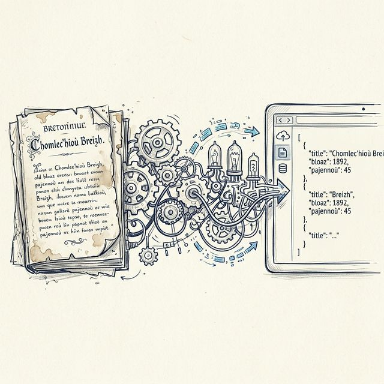

Extraction automatique de corpus bilingues breton-français depuis des ouvrages historiques (1865–1944) par Vision Language Models, puis entraînement de modèles de traduction neuronale.

Chaque ouvrage traverse 7 étapes, du PDF scanné jusqu'au corpus d'entraînement.
PDF → PNG à 300 DPI via PyMuPDF
CLAHE, DocRes (CVPR 2024), PreP-OCR
Extraction bilingue par VLM (GPT-5.2, Gemini, Claude)
Contrôle qualité automatique + correction humaine
WER & CER contre des références gold
Déduplication, fusion → JSONL final
Fine-tuning du modèle de traduction
10 ouvrages historiques numérisés, couvrant 80 ans de publications bretonnes. Accéder au corpus ↗
| Ouvrage | Auteur | Année | Type | Pages | |
|---|---|---|---|---|---|
| Manuel Breton-Français | Toullec | 1865 | Lexique | 87 | 📄 |
| Colloque Français et Breton | Le Lourec | 1884 | Lexique | 72 | 📄 |
| Lexique Breton-Français | Normant | 1902 | Lexique | 71 | 📄 |
| Vocabulaire Français-Breton | Le Gonidec | 1919 | Dictionnaire | 313 | 📄 |
| Geriadur Gallek ha Brezonek | Anonyme | 1927 | Lexique | 22 | 📄 |
| Cours élémentaire de Breton | Roparz | 1930 | Méthode | 31 | 📄 |
| Le Français par le Breton | Le Bozec | 1933 | Méthode | 78 | 📄 |
| Yez hon Tadoù | Seite | 1940 | Cours | 96 | 📄 |
| Ker Vreiz — 1er Cours de Breton | Daniel | 1944 | Méthode | 37 | 📄 |
Taux d'erreur (CER / WER) par ouvrage et par langue, mesurés contre des références gold annotées manuellement.
| Ouvrage | Post-OCR — Breton | Post-OCR — Français | Post-correction IA | |||
|---|---|---|---|---|---|---|
| CER | WER | CER | WER | CER | WER | |
| Toullec — Lexique | — | — | — | — | — | — |
| Colloque Lourec | — | — | — | — | — | — |
| Normant — Lexique | — | — | — | — | — | — |
| Le Gonidec — Vocabulaire | — | — | — | — | — | — |
| Geriadur — Lexique médical | — | — | — | — | — | — |
| Roparz — Cours élémentaire | — | — | — | — | — | — |
| Bozec — Méthode | 6,6% | 13,3% | 4,8% | 9,6% | — | — |
| Yez hon Tadou | — | — | — | — | — | — |
| Daniel — Ker Vreiz | — | — | — | — | — | — |
Répartition des erreurs entre silences (paires manquantes) et bruit (paires en trop).
| Ouvrage | Post-OCR | Post-correction IA | ||
|---|---|---|---|---|
| Silences | Bruit | Silences | Bruit | |
| Toullec — Lexique | — | — | — | — |
| Colloque Lourec | — | — | — | — |
| Normant — Lexique | — | — | — | — |
| Le Gonidec — Vocabulaire | — | — | — | — |
| Geriadur — Lexique médical | — | — | — | — |
| Roparz — Cours élémentaire | — | — | — | — |
| Bozec — Méthode | 17,2% | 4,0% | — | — |
| Yez hon Tadou | — | — | — | — |
| Daniel — Ker Vreiz | — | — | — | — |
Le corpus extrait alimente l'entraînement de modèles de traduction neuronale Breton↔Français.
Modèle multilingue de base (418M paramètres) couvrant 100 langues. Fine-tuning sur notre corpus pour spécialiser la paire breton-français.
Variante déjà pré-entraînée pour le breton par Loïc Grobol. Entraînement complémentaire avec nos données historiques.
Obtenir un traducteur performant pour le breton, capable de gérer les variations orthographiques historiques et le vocabulaire spécialisé.
Pipeline modulaire, CLI unifiée
GPT-5.2, Gemini 3.1, Claude Sonnet 4
DocRes, PreP-OCR
m2m100, tokenizers, Trainer
DocRes — restauration de documents
Gemini Batch — 50% de coûts en moins
Morgane Bona-Pellissier — Étudiante en master de traitement automatique des langues à l'Université Paris Nanterre, docteure en traductologie (Université de Genève, 2023). Ses recherches portent sur la traduction automatique neuronale et les langues peu dotées et minorisées ; elle parle catalan et étudie le breton.